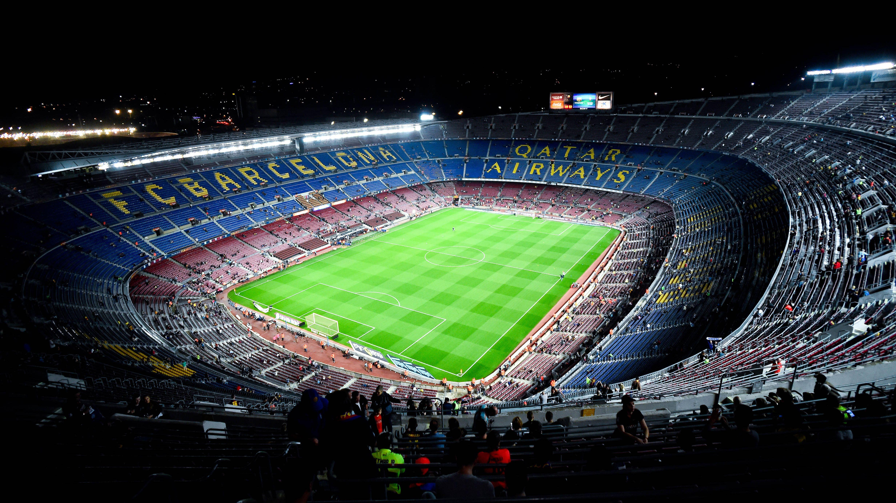

Un estadio de máxima categoría
Spotify Camp Nou
El Spotify Camp Nou acoge los partidos de fútbol del primer equipo del Club desde septiembre de 1957.
El nuevo estadio del Barça sustituyó el antiguo campo de Les Corts, que a pesar de que tenía una capacidad para 48.000 espectadores (después de varias ampliaciones) se quedó pequeño con la gran expansión de la afición azulgrana experimentada a finales de la década de los cuarenta.
Los arquitectos Francesc Mitjans Miró y Josep Soteras Mauri (con la colaboración de Lorenzo García Barbón) diseñaron el Estadio, que se construyó entre 1955 y 1957 a base de hormigón y hierro. La obra costó unos 288 millones de pesetas y supuso el endeudamiento del Club durante unos años.
Aunque inicialmente no tenía nombre, una encuesta entre los socios celebrada en septiembre de 1965 estableció como nombre oficial Estadio del CF Barcelona. De todos modos, popularmente desde 1957 se bautizó como Camp Nou, ya que el estadio sustituía el antiguo campo de Les Corts, el campo viejo. En abril de 2001 se oficializó el nombre de Camp Nou después de una consulta popular, a través del correo, entre los socios de la Entidad. De las 29.102 respuestas que se remitieron al Club, un total de 19.861 (el 68.25%) apostaron por Camp Nou en lugar de Estadio del FC Barcelona.
El Estadio tiene una altura máxima de 49,67 metros y una superficie de 58.760 metros cuadrados (260 metros de longitud y 226 de anchura). Siguiendo la normativa de la UEFA, el terreno de juego hace 105 m x 68 m.
Con una capacidad de 99.354 personas, actualmente es el estadio más grande de toda Europa. La capacidad del Estadio, sin embargo, ha sufrido varios cambios, debido a las diferentes ampliaciones que se han hecho. Inicialmente, en 1957 cabían 99.053 espectadores, cifra que llegó hasta los 115.000 en 1982, coincidiendo con la celebración del Mundial de fútbol. Posteriormente, en aplicación de la normativa que obligaba a eliminar las localidades de pie, el aforo se situó nuevamente, a finales de los años 90, en la raya de los 99.000 espectadores.
Durante la temporada 1998/99, la UEFA reconoció los servicios y la funcionalidad del Camp Nou y lo clasificó como estadio Cinco Estrellas. En el año 2010, con el nuevo reglamento de la UEFA, esta categoría se sustituyó por la de Categoría 4, que corresponde a los estadios que cumplen las máximas exigencias en prestaciones, servicios y aforo, como es el caso del Estadio del FC Barcelona.
Entre todas las instalaciones y dependencias que hay en el interior del Estadio destacan una pequeña capilla al lado de los vestuarios, los palcos, la sala VIP, la sala de prensa, varios platós de televisión, las cabinas de prensa, las oficinas de servicios técnicos, el Centro de Medicina Deportiva, la Unidad de Control Operativo (UCO), el local de la Agrupación Barça Jugadores, el Museo del FC Barcelona y dependencias de varios departamentos del Club.